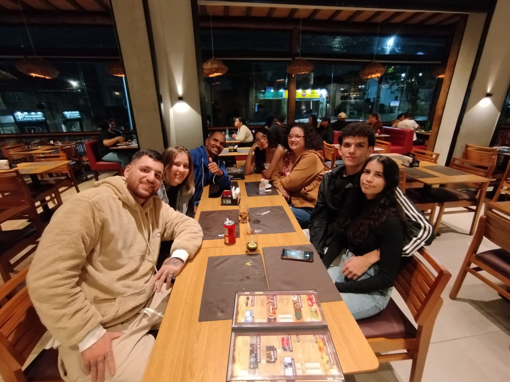

Oceans nasceu da certeza de que a música vai além do som — ela é memória, sentimento e
conexão. Mais
do que uma rede social, somos um espaço acolhedor, feito para quem encontra na música
um abrigo, um
impulso ou uma lembrança. No Oceans, cada batida importa, cada relato tem valor, e cada artista
ganha vida através daquilo que suas canções despertam em nós.
Acreditamos na força das emoções e na potência da coletividade. Por isso, transformamos
experiências
pessoais em um oceano de sentimentos compartilhados.
